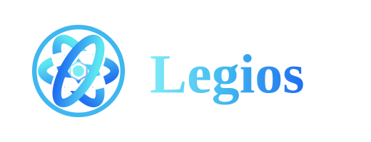
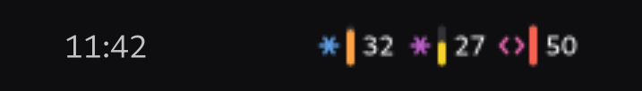
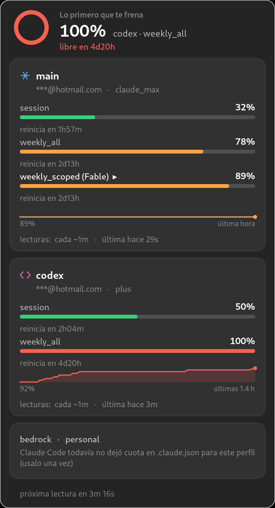
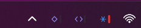
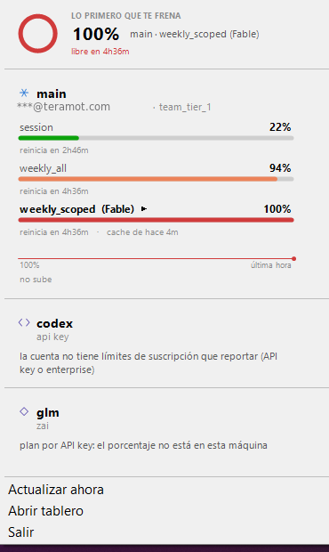

The ones out there read one credential: the default directory's. This one reads every profile you have, plus Codex and opencode — no network, no credentials.
Built by Valentín Torassa and Sol Soletti
Homebrew. Also on npm.


One meter per account up top. The full panel one click away.
Claude Code supports several profiles through CLAUDE_CONFIG_DIR, and each
one has its own account and its own credential. A work seat and a personal
subscription on the same laptop is ordinary. What exists reads one: the default
directory's — which tends to be exactly the empty one.
It finds every CLAUDE_CONFIG_DIR on the machine, not just ~/.claude. Plus Codex and the providers opencode stores.
It does not open your keychain or read a token. The number comes from cachedUsageUtilization, where Claude Code leaves the server's last answer.
At 80% and 95%, when the projection says you hit the wall before the reset, and — most usefully — when you are free again.
Inside limits[] there are bars with no named key of their own.
Reading only the two famous ones showed a comfortable account. The one actually
about to stop it was 67 points higher, flagged by the server.
That bar was marked warning by the server itself and showed up in no
monitor, because it has no named key: it lives inside the list. quartermaster shows
whichever one stops you first.
The same number, drawn for each desktop. There is no app to open.
One meter per account in the top bar, and the panel on one click with its own extension.
make indicador
The menu bar, with the same panel and the same meter.
make barra
The notification area, with a ring that says how much is left. Native, or from WSL.
make tray
A table, or one line for your statusline. And --json for scripts.
qm --breve


$ qm --breve main 46/89%! · teams 36/60%! · codex 50/100%! # session/week per account. "!" is a bar the server flagged with a warning.
There is no build step: qm reads its TypeScript directly, which is why it asks for Node ≥ 22.6.
$ brew install legiosai/tap/quartermaster $ qm
$ npm install -g @legios/quartermaster $ qm
# once: the key and the repo $ sudo install -d -m 0755 /etc/apt/keyrings $ curl -fsSL https://quartermaster.legios.com.ar/apt/legios.gpg \ | sudo tee /etc/apt/keyrings/legios.asc >/dev/null $ echo "deb [signed-by=/etc/apt/keyrings/legios.asc] \ https://quartermaster.legios.com.ar/apt stable main" \ | sudo tee /etc/apt/sources.list.d/legios.list >/dev/null # and from then on, like any other package $ sudo apt update && sudo apt install quartermaster
# the installer from the latest release: puts qm on your # PATH and the tray in the Start menu. Per-user, no UAC. > quartermaster-0.1.6-setup.exe > qm # (winget and scoop: the manifests are written and not # approved yet. npm works in the meantime.) > npm install -g @legios/quartermaster
$ git clone https://github.com/legiosai/quartermaster $ cd quartermaster && npm install $ make instalar # puts `qm` in ~/.local/bin
The apt repo is signed and lives on this same page, so
apt upgrade brings the new version by itself. The launcher looks for a
usable Node on the PATH and in nvm; if it finds none, it says so and
explains how to get one.